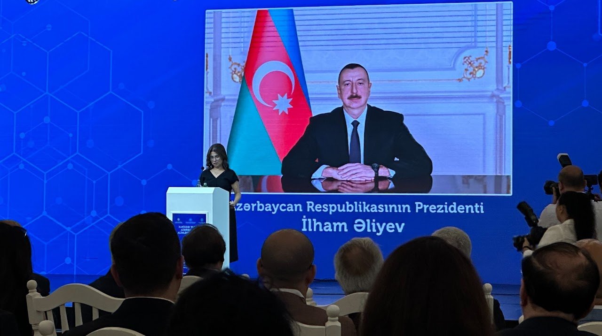
Farah Aliyeva, Head of the Humanitarian Policy Department, Administration of the President of the Republic of Azerbaijan
Video reports and interviews published in the media on Forum 2024

Farah Aliyeva, Head of the Humanitarian Policy Department, Administration of the President of the Republic of Azerbaijan
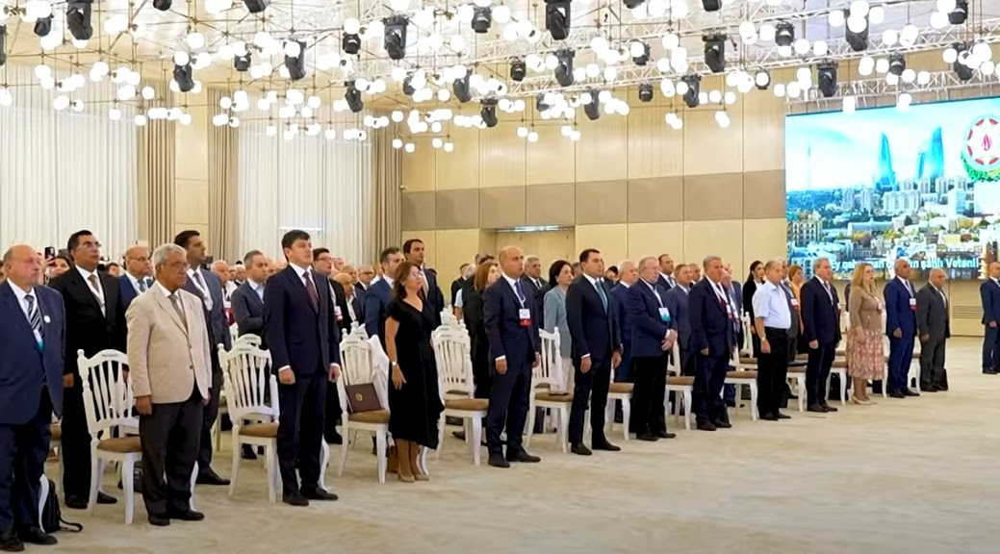
First day of the Forum of Azerbaijani Scientists Living Abroad

Visit to the Alley of Honour and the Alley of Martyrs

Congratulations to the Forum of Azerbaijani Scientists Living Abroad from Nobel laureate Aziz Sancar — Turkish physician, academic, biochemist, molecular biologist and scientist

Congratulations to the Forum of Azerbaijani Scientists Living Abroad from Nobel laureate Arie Varshavsky — member of the National Academy of Sciences, Honoured Scientist of the Russian Federation, Dana and David Dornsife Chair in Chemistry, Distinguished Professor of Chemistry and Biochemistry

Mesud Afandiyev, Honoured Scientist, Professor at the Technical University of Munich, first Azerbaijani Humboldt Prize laureate, Chair of the WAAS Executive Board, Germany
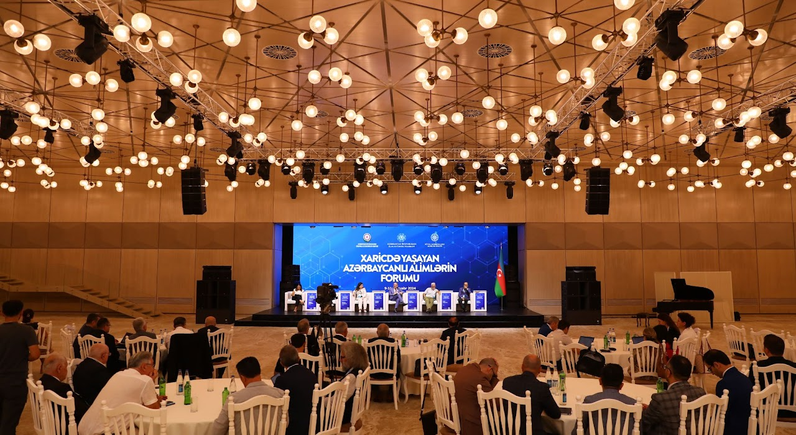
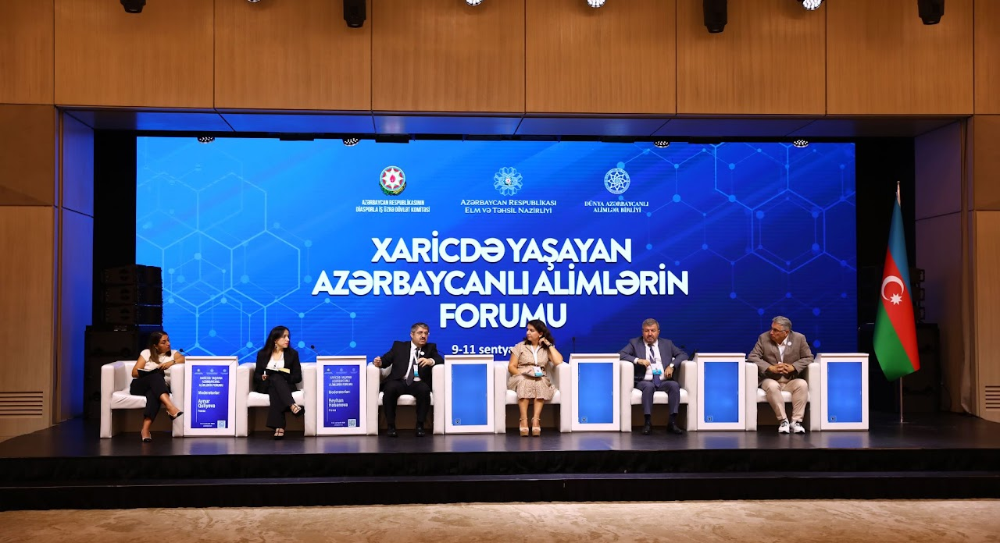
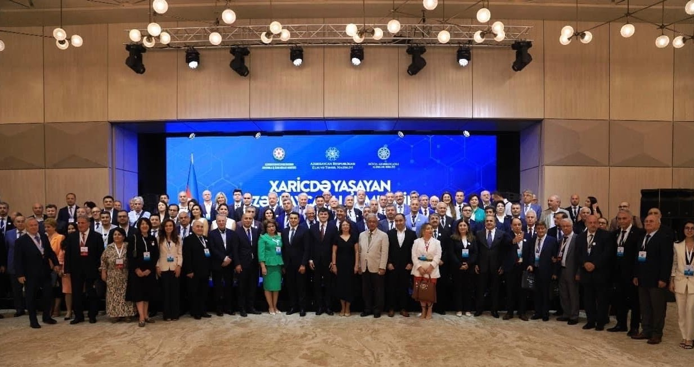
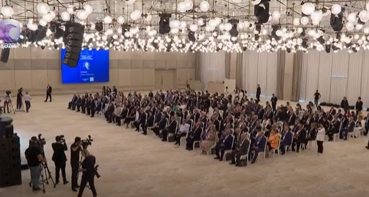
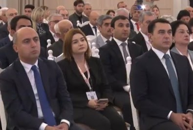

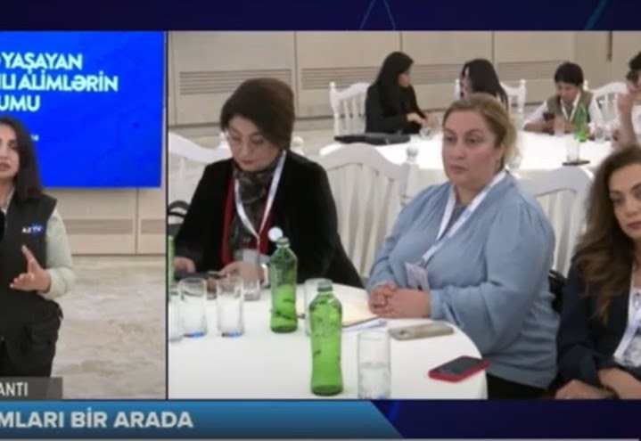

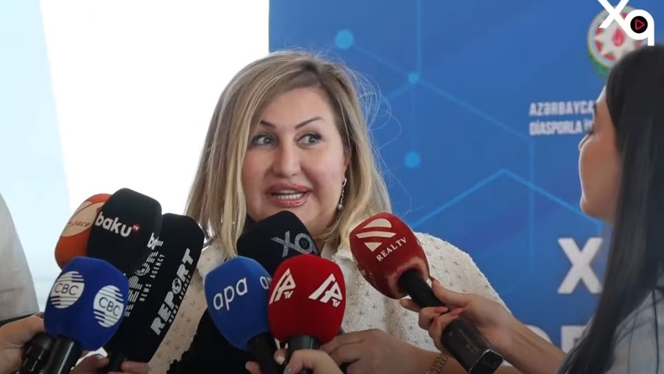
Reza Heyati, Saida Khalilova, Kamran Rustamov, Adalet Muradov, Togrul Talishinski, Bakhtiyar Sirajov, Arif Guliyev

Forum of Azerbaijani scientists living abroad held in Baku

Azerbaijani scientists living abroad visit Khankendi and Shusha

Fuad Muradov, Chairman of the State Committee on Diaspora Affairs of the Republic of Azerbaijan
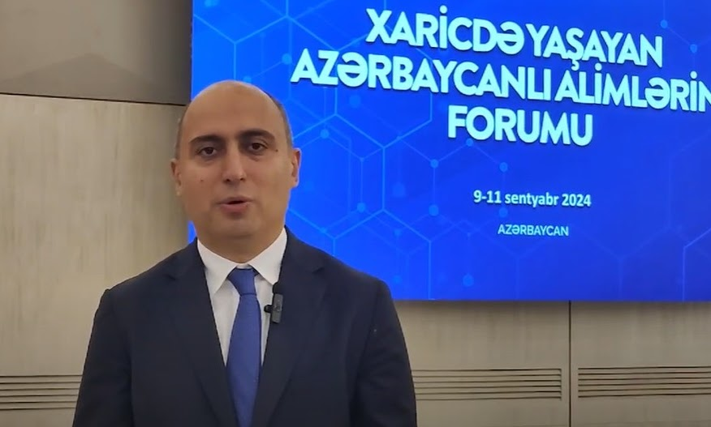
Emin Amrullayev, Minister of Science and Education of the Republic of Azerbaijan

Emin Amrullayev, Minister of Science and Education of the Republic of Azerbaijan

Vasila Vahid gizi, Head of Department, State Committee on Diaspora Affairs of the Republic of Azerbaijan

Vasila Vahid gizi, Head of Department, State Committee on Diaspora Affairs of the Republic of Azerbaijan
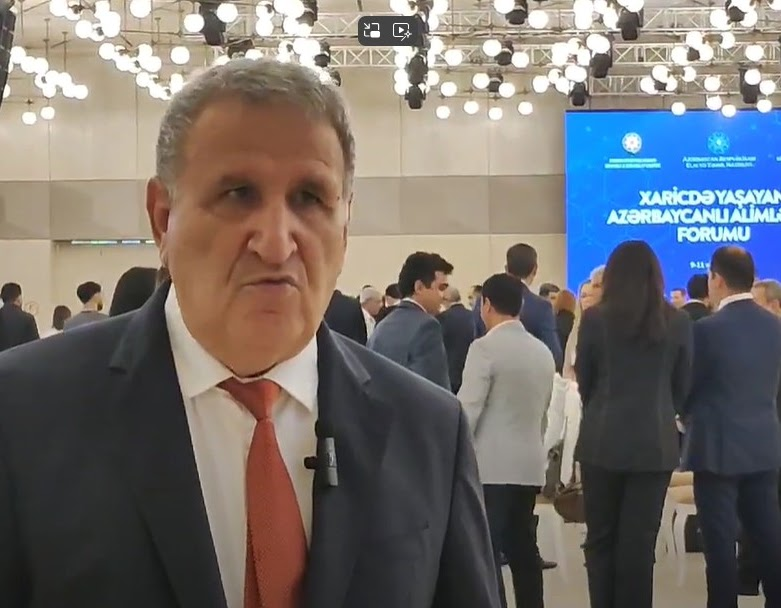
Isa Habibbayli, President of the Azerbaijan National Academy of Sciences
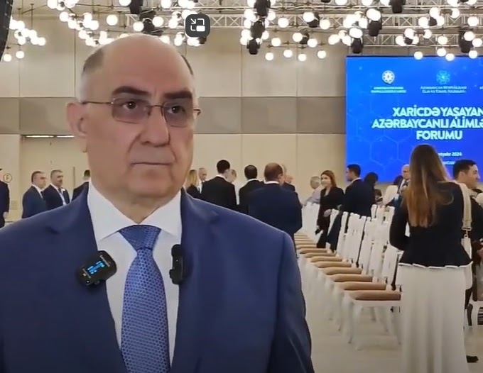
Rasim Aliquliyev, Vice-President of ANAS, Director General of the Institute of Information Technologies of the Ministry of Science and Education of the Republic of Azerbaijan
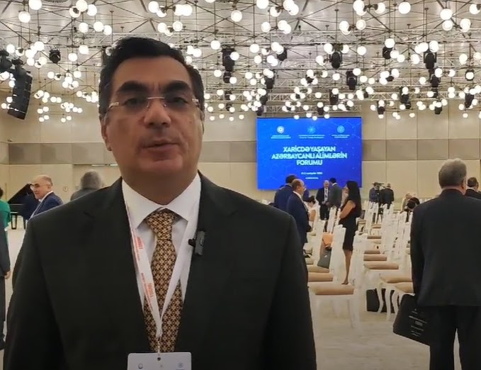
Elmar Gasimov, Rector of the Baku Higher Oil School
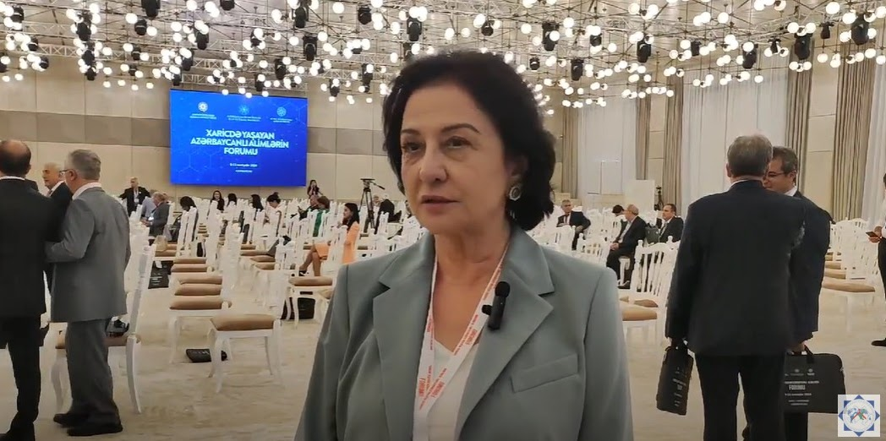
Gulchohra Mammadova, Rector of Azerbaijan University of Architecture and Construction
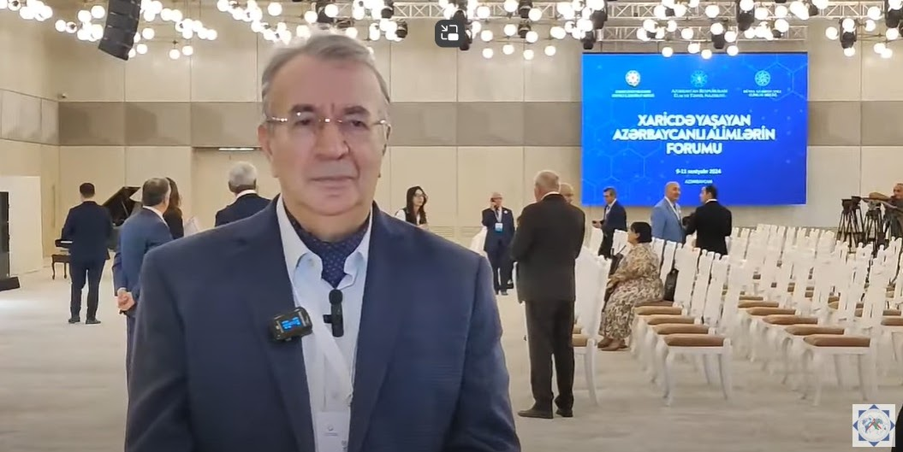
Mesud Afandiyev, Honoured Scientist, Professor at the Technical University of Munich, first Azerbaijani Humboldt Prize laureate, Chair of the WAAS Executive Board, Germany

Mesud Afandiyev, Honoured Scientist, Professor at the Technical University of Munich, first Azerbaijani Humboldt Prize laureate, Chair of the WAAS Executive Board, Germany; Gara Mursudov, Professor, Structural Biology Laboratory, Department of Chemistry, University of York, United Kingdom, Honoured Scientist of the Republic of Azerbaijan
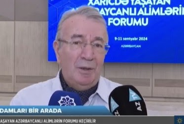
Mesud Afandiyev, Honoured Scientist, Professor at the Technical University of Munich, first Azerbaijani Humboldt Prize laureate, Chair of the WAAS Executive Board, Germany
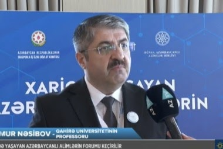
Seymur Nasirov, Professor at Cairo University, Egypt, Chair of the Egypt–Azerbaijan Friendship Society, Co-Chair of the WAAS Executive Board, Egypt

Yulduz Rahimov, Sessional Lecturer, Department of Mathematics and Statistics, Faculty of Science, York University (Toronto), Member of the WAAS Executive Board, Canada
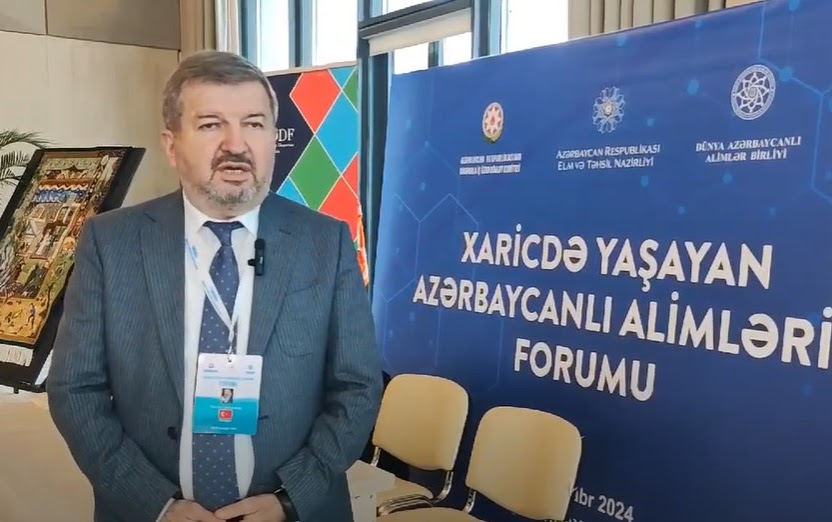
Togrul Ismayil, Professor, Head of the International Relations Department, Kahramanmaras Sutcu Imam University, Member of the WAAS Executive Board, Türkiye
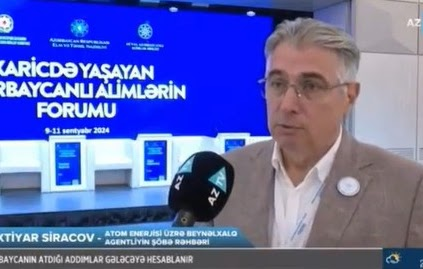
Bakhtiyar Sirajov, Head of the Information Systems Section, Department of Safeguards, International Atomic Energy Agency, 2005 Nobel Peace Prize laureate, Co-Chair of the WAAS Executive Board, Austria

Bakhtiyar Sirajov, Head of the Information Systems Section, Department of Safeguards, International Atomic Energy Agency, 2005 Nobel Peace Prize laureate, Co-Chair of the WAAS Executive Board, Austria

Aytekin Huseynli, Assistant Research Professor, Washington University in St. Louis, USA
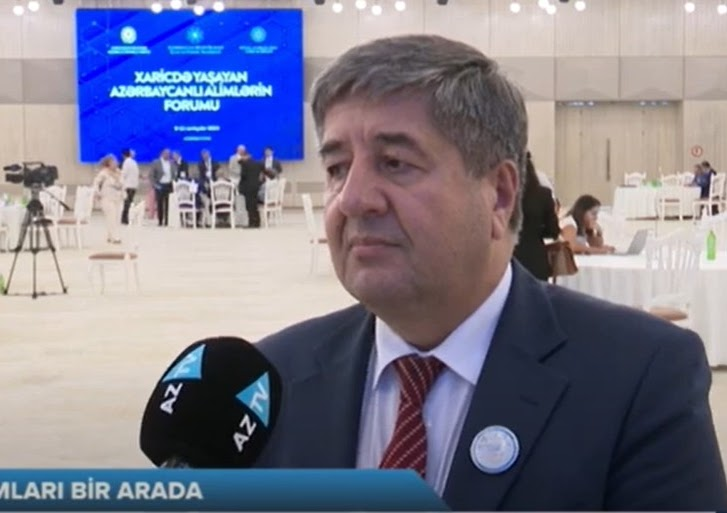
Reyhan Hasanova, Research Consultant at Oracle France, France
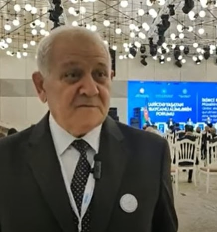
Akif Alaferdov, Chair of the Kyrgyzstan–Azerbaijan Friendship and Cooperation Society, Honoured Physician of the Kyrgyz Republic, Kyrgyzstan
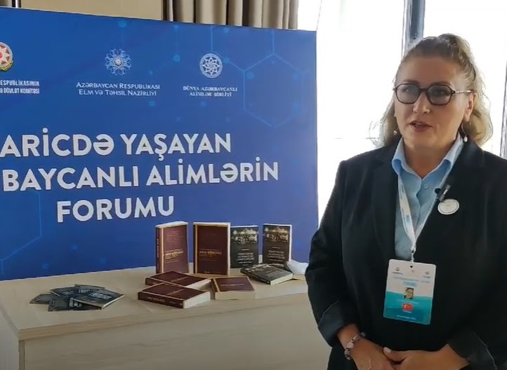
Afina Barmanbay, Lecturer, Department of Contemporary Turkic Dialects and Literatures, Faculty of Science and Letters, Kafkas University, Kars, Türkiye
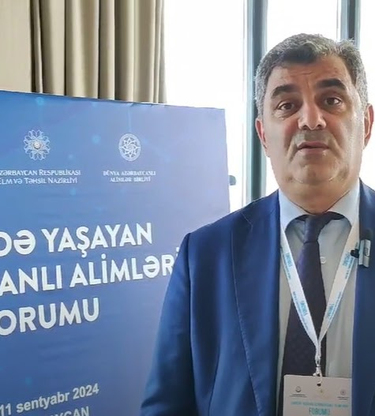
Khagani Gayibli, Professor, Director of the Turkish Language Centre, University of Tartu, Estonia
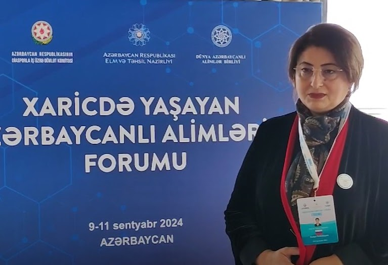
Sevinj Askarova, Doctor of Medical Sciences, Academician of TEA, Honoured Science and Education Worker, Russia
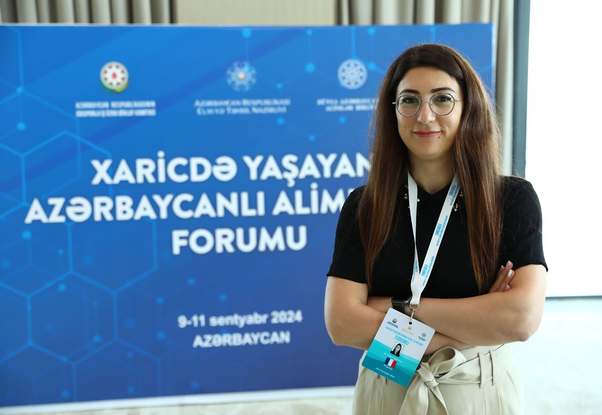
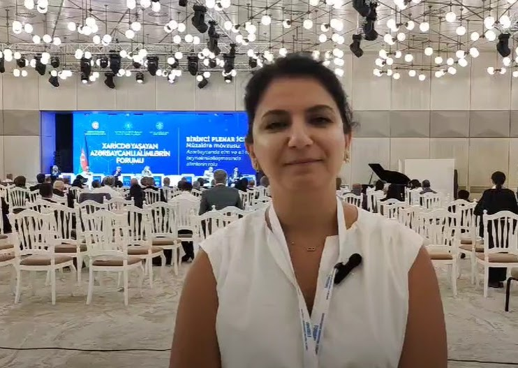
Nigar Masumova, Candidate of Economic Sciences, Associate Professor, Head of the Advertising and Public Relations Department, Deputy Dean of the Faculty of International Journalism, MGIMO University, Ministry of Foreign Affairs of the Russian Federation, Russia

Gara Mursudov, Professor, Structural Biology Laboratory, Department of Chemistry, University of York, United Kingdom, Honoured Scientist of the Republic of Azerbaijan
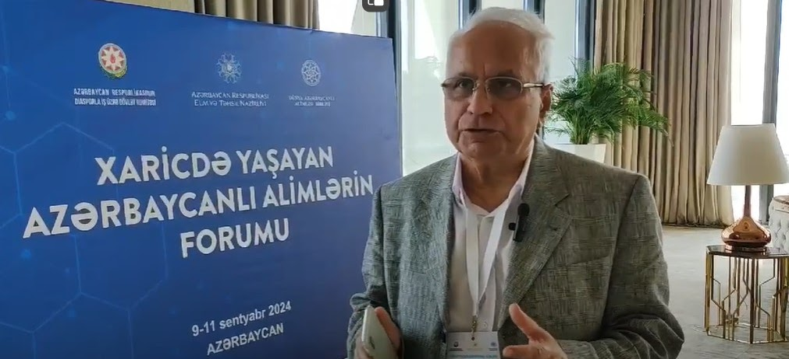
Kamran Rustamov, Honoured Scientist of the Republic of Azerbaijan, foreign member of the Russian Academy of Architecture and Construction Sciences, member of the Journalists' Unions of Azerbaijan and Russia, publicist, public figure, Doctor of Sciences, Russia

Rovshan Ibrahimov, Professor, Hankuk University of Foreign Studies, Doctor of Sciences, Korea
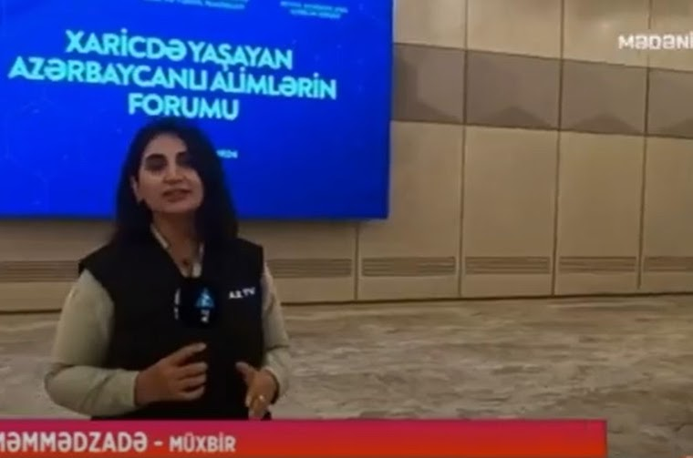
Mirza Mutallimov, Senior Consultant Cardiologist and Principal Investigator Physician, University Medical Center Mainz and Saarland University Clinic, Germany; Shahriyar Mukhtarov, Professor and Head of the Doctoral Programme, Department of Economics and Finance, Vistula University, Poland, Professor, Department of Economics, Korea University, Korea; Bakhtiyar Sirajov, Head of the Information Systems Section, Department of Safeguards, International Atomic Energy Agency, 2005 Nobel Peace Prize laureate, Co-Chair of the WAAS Executive Board, Austria
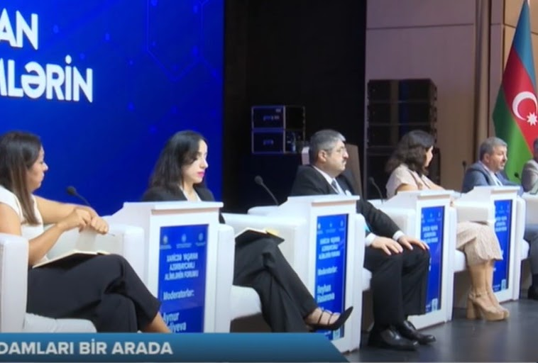
Shahriyar Mukhtarov, Professor and Head of the Doctoral Programme, Department of Economics and Finance, Vistula University, Poland, Professor, Department of Economics, Korea University, Korea; Togrul Talishinski, Director of Minimally Invasive Surgery, St. Joseph University, Associate Professor of Surgery, Hackensack Meridian School of Medicine, Seton Hall University, USA
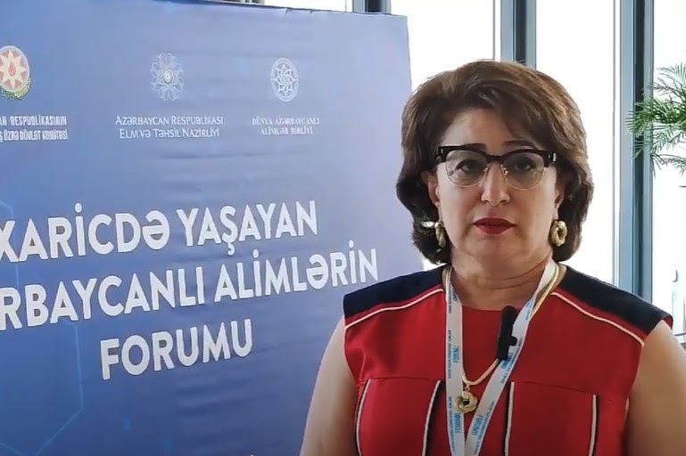
Arzu Gurbanova, Candidate of Pedagogical Sciences, Professor, Department of Language and Literature, Central Asia Innovation University, Kazakhstan
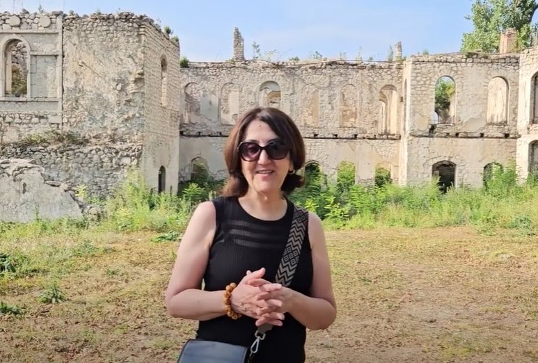
Jamila Javadova-Spitsberg, first Azerbaijani woman organist to earn a Doctor of Music degree, Professor, University of Texas, USA

Lev Eppelbaum, Professor, Faculty of Geophysics, Tel Aviv University, Honorary Professor of Azerbaijan State Oil and Industry University, Israel
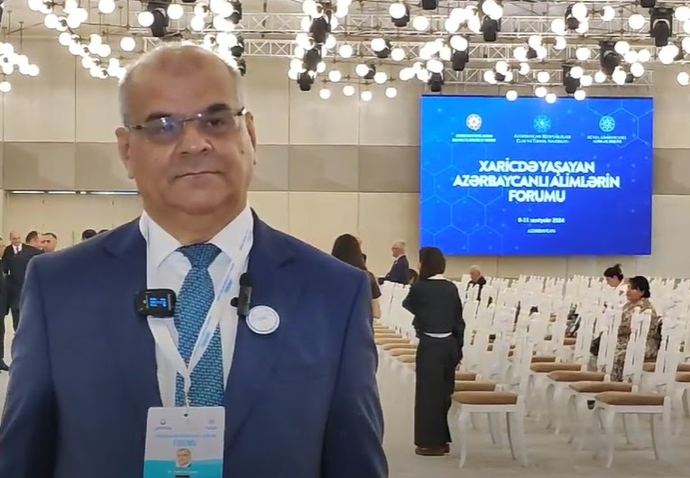
Yashar Musayev, Senior Management, Science and Education Division (R&D), Green Energy Technologies, Siemens Energy, Germany
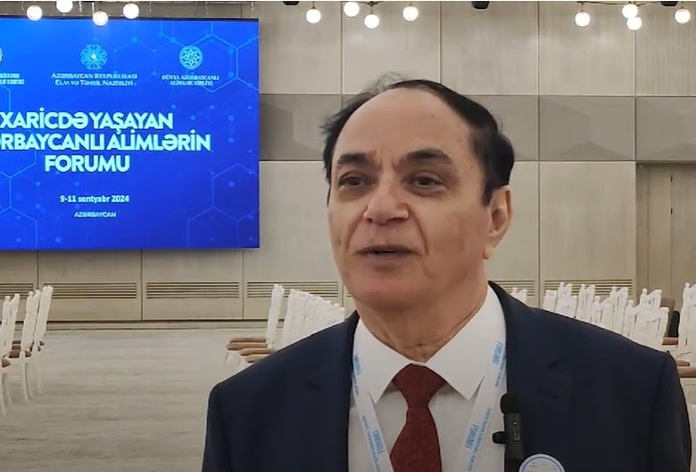
Azer Abdullayev, Trauma and Orthopaedic Surgeon, Consultant, Head of the Orthopaedics Department, Kingdom of Saudi Arabia
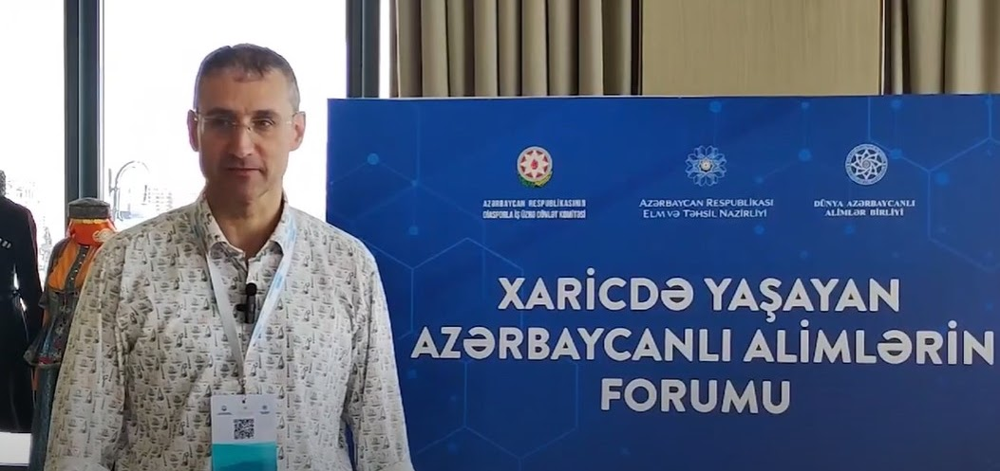
Emil Ahmadov, Head of the L. D. Landau Department of Theoretical Physics, Moscow Institute of Physics and Technology, Doctor of Sciences, Russia
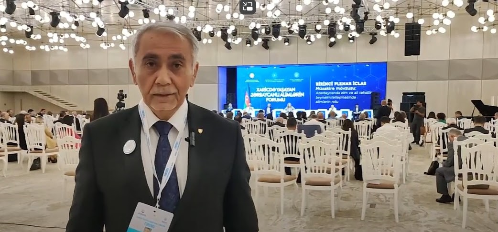
Ilham Akhundov, Professor, Director of Mathematics and Business Programmes, Faculty of Mathematics, University of Waterloo, Canada
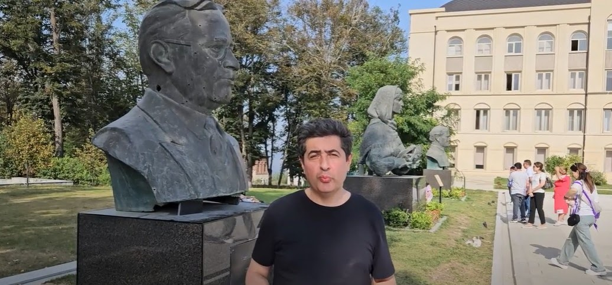
Abulfaz Suleymanli, Professor, Head of the Sociology Department, Uskudar University, Expert of the International Turkic Academy, Türkiye
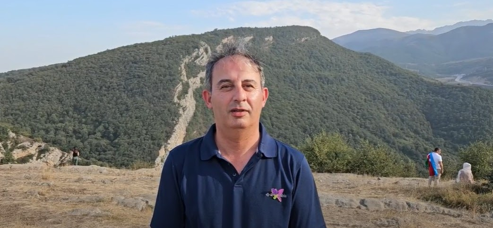
Mammadreza Heyat, Director of the Tabriz Research Centre, Editor-in-Chief of Varliq journal, Lecturer at Ankara University, Türkiye

Dilgam Ahmadov, Doctoral student, Istanbul University, Türkiye
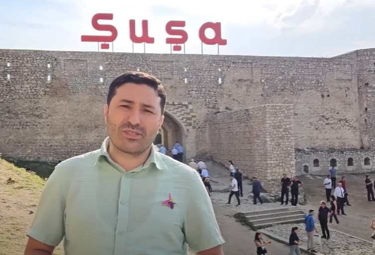
Shahriyar Mukhtarov, Professor and Head of the Doctoral Programme, Department of Economics and Finance, Vistula University, Poland, Professor, Department of Economics, Korea University, Korea

Natiq Agakishiyev, Physicist, mathematician, Honoured Scientist, Professor, Mexico
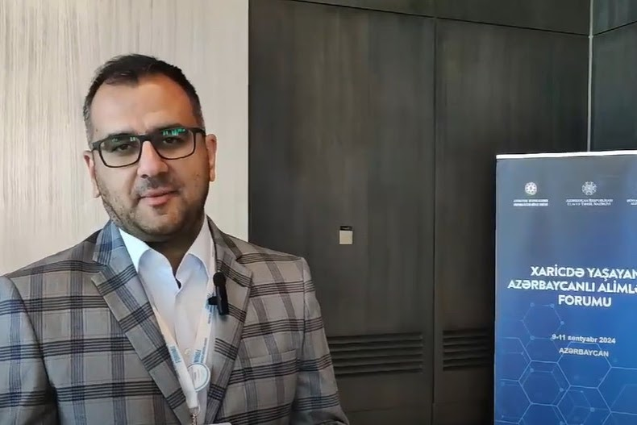
Valeh Rustamov, Postdoctoral Researcher, Mannheim University of Applied Sciences, Germany

Gara Mursudov, Laboratory Director, Cambridge University Research Institute, United Kingdom; Elvin Mammadov, expert on education abroad

Shuay Abdullayev, Postdoctoral Researcher, University of Georgia, USA

Sevinj Mammadova, Professor, George Washington University, USA; Rauf Abdullayev, ICT Engineer, Germany; Mesud Afandiyev, Chair, Germany, James D. Murray Distinguished Professor. WAAS registered address in Türkiye: Feneryolu Mahallesi, Gazi Muhtar Pasa Sokak No. 44, Kadikoy, Istanbul, Türkiye. Phone: +90 555 147 46 74. Email: daad.waas2024@gmail.com. Web: https://daab-waas.org